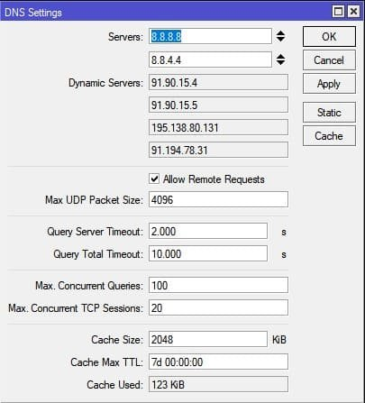
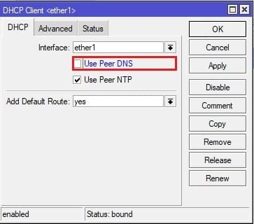
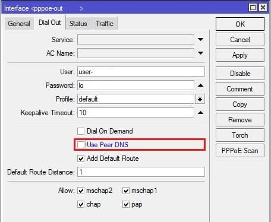
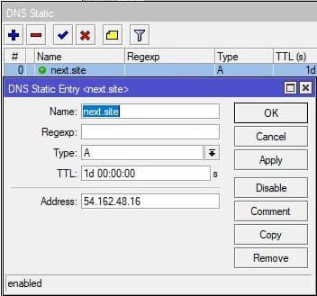
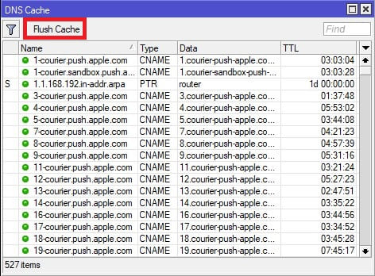

Налаштування сервера MikroTik DNS
Інструкція містить опис налаштування DNS сервера в MikroTik , загальні відомості про роботу з DNS серверами: динамічними та Active Directory .
До налаштування сервера MikroTik DNS
Різні конфігурації як локальної мережі так і інтернет підключень зобов'язують розглядати підводні камені і проходити до певних обмежень налаштування та використання MikroTik як DNS сервера. Підкреслимо найпоширеніші випадки:
Налаштування знаходиться в IP→DNS

/ip dns
set allow-remote-requests=yes servers=8.8.8.8,8.8.4.4
Allow remote requests – дозвіл на обробку віддалених запитів DNS . Тобто. якщо вказати MikroTik як DNS сервер, він опрацює всі запити, що надходять.
Підключення типу dhcp client , pppoe client , LTE мають активний параметр Use Peer DNS . Таким чином запис, який доступний при підключенні такого з'єднання передає динамічний DNS сервер у відповідний розділ RouterOS роутера MikroTik . Щоб цього уникнути, потрібно відключити відповідні опції параметрів підключень, наприклад:


На роутері MikroTik функціонує повноцінна служба сервера DNS , функціонал якого включає використання статичних записів.
Налаштування знаходиться в IP→DNS→Static

При роботі з будь-яким сервером DNS , зокрема зміною старих записів, потрібно очистити кеш DNS , щоб клієнт отримав свіжі записи. Це очищення здійснюється через кнопку Flush Cache .
Налаштування знаходиться в IP→DNS→Cache→Flush Cache
